Facebook's new Paper app is all polished minimalism and white space, but a grittier reading experience can be more satisfying
This week, Facebook launched Paper, an app designed to transform the experience of reading Facebook's content on your iPhone. It's uncluttered, slick, minimalist, polished. As one of the project's engineers put it:"Paper was designed on a principle: content should be respected … [and] if content is to be respected, it should be beautifully presented."
You hear the word "beautiful" all the time, these days, when web design's being discussed. Medium, the blogging platform created by the Twitter co-founder Ev Wiliams, was conceived to be "simple [and] beautiful". Likewise Svbtle, another "beautiful" stripped-down publishing system, was designed to "get out of the way.". This is the aesthetic of Jony Ive's iOS7, with its flat icons and defiant lack of adornment; it's an aesthetic for a world that does its reading on smooth pieces of black glass with curved corners . It's the aesthetic that's rapidly coming to dominate the web – which is why I feel some nervousness in poking my head above the parapet to say: what if I don't want my reading experience to be this beautiful?
Yes, yes, of course this is partly just the ranting of a decreasingly young web user, disgruntled by change. But it isn't only that. There's some evidence to suggest that when you make the reading experience too smooth and glossy and beautiful, you make it less engaging and satisfying, too. The key concept here, explored in depth by the psychologist Adam Alter, author of the book Drunk Tank Pink, is "cognitive disfluency". When information glides by too frictionlessly, we're liable to find it harder both to understand and to retain.
In a classic experiment, students were presented with a printed question: how many of each animal did Moses take into the ark? When the question was displayed in an easy-to-read typeface, 88% missed the error – that the gentleman in question was Noah, not Moses. When it was displayed in a hard-to-read font, that proportion fell to 53%. When a font's harder to read, writes Alter, "we assume the task is difficult and requires additional mental effort … We respond by recruiting additional mental resources to overcome that challenge, and our responses tend to be more accurate." Other studies have found that information received in unfamiliar fonts is memorised more effectively, and that it may be harder to grasp material consumed in e-book form, where the words slide by as if on ice skates, than in print.
I'm not really suggesting that online publishers should deliberately employ awful fonts. But I doubt I'm alone in feeling a certain satisfaction when what I'm reading is presented in a non-beautiful way. It's hard to describe. But for some reason (linked to cognitive disfluency?) there's a greater sense of getting purchase on the material, of getting the meat of it between my teeth
I hope the people at the New York Review of Books won't take it wrongly when I say I consider their magazine to be Exhibit A in this regard. Every time I see that crazy jumble of fonts on the cover, then turn to the dense columns of type inside, I get a small but palpable thrill. All that density and lack of white space says: dive in; there's lots to get absorbed in here.
By contrast, there's an unbearable lightness to the slippery minimalism of Medium, and sometimes it gets in the way. Writing presented like that is wonderfully easy to consume, yet also wonderfully easy to forget. By the time I get to the end of even a short piece, the first paragraph has faded not just from the screen, but from my mind.
I don't expect the born-again minimalists of Silicon Valley to start re-cluttering their user interfaces. But it would be nice if they could remember that current aesthetic fashions are just current aesthetic fashions – not some ultimate Platonic ideal of how to communicate online. And if anyone wants to design a plug-in to make Medium look like the New York Review of Books, I can guarantee you one customer, at least.

 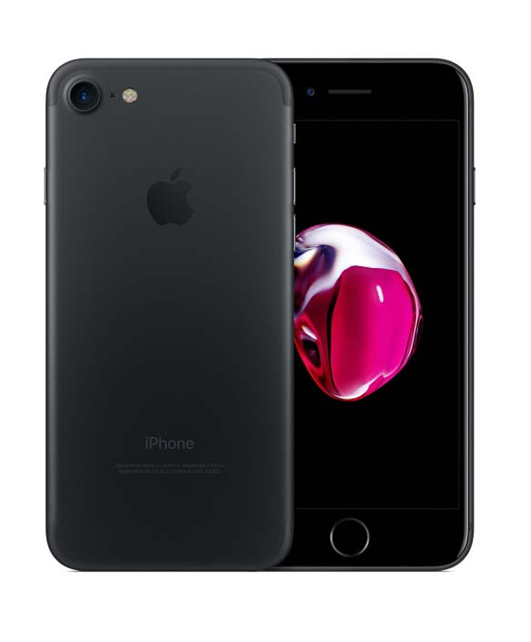
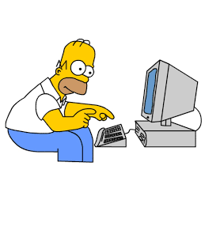
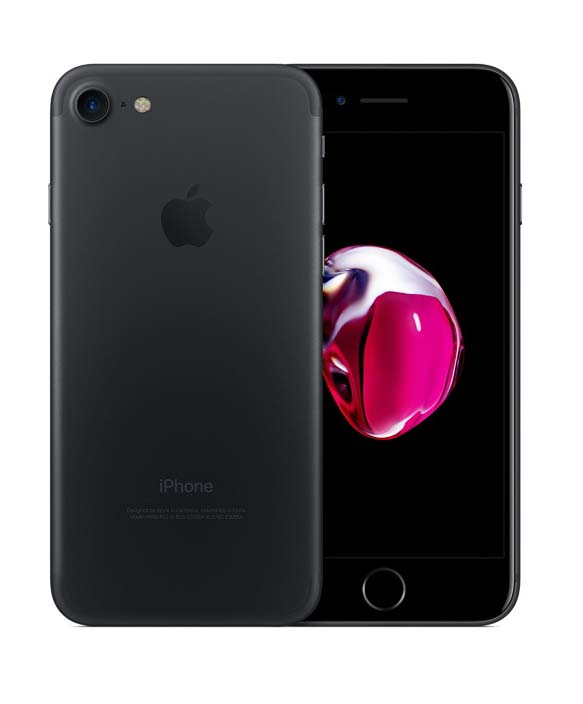
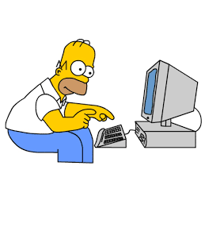
 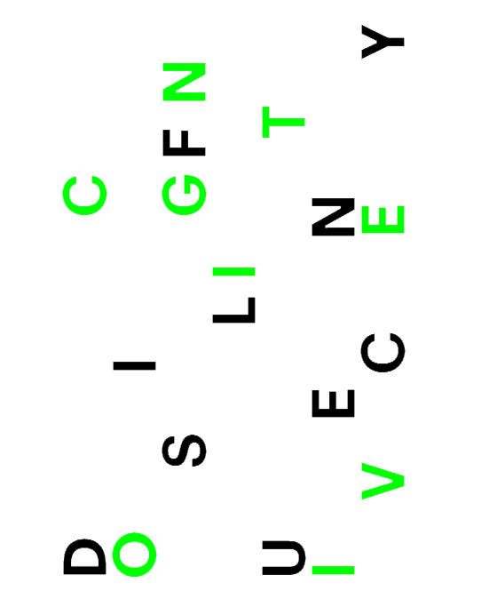
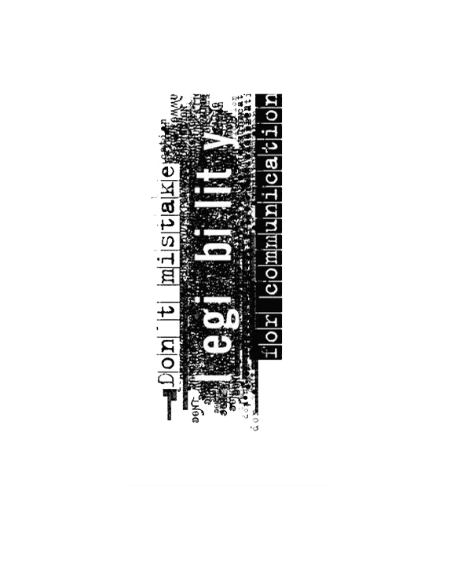
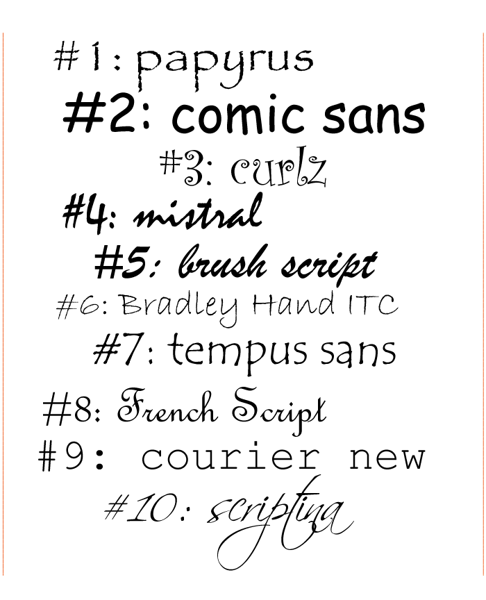
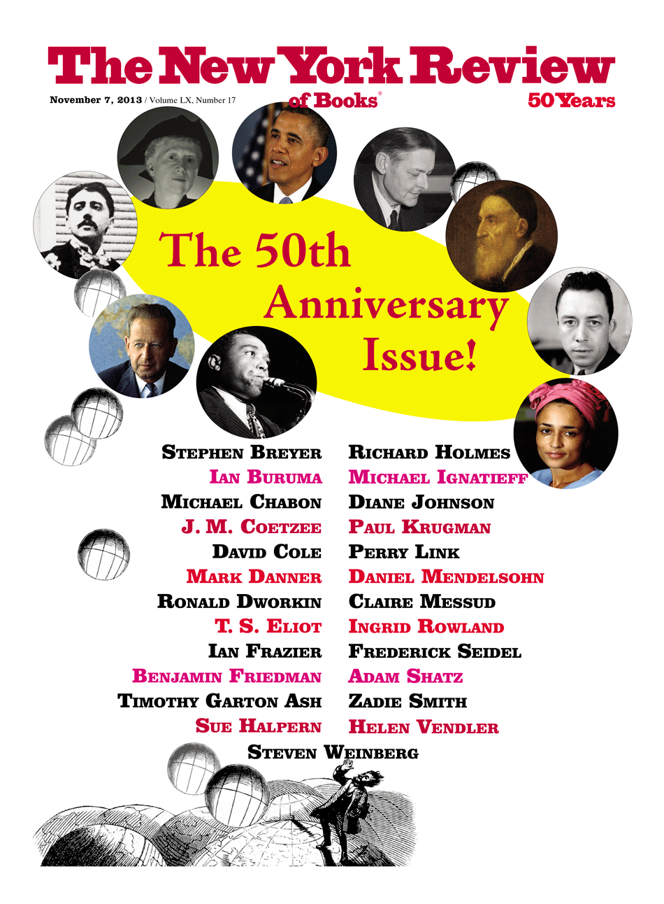
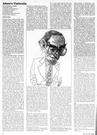
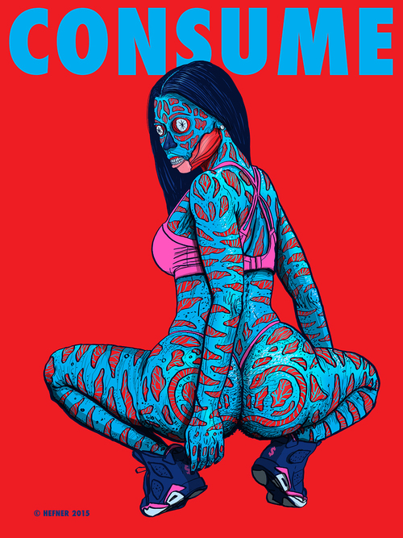
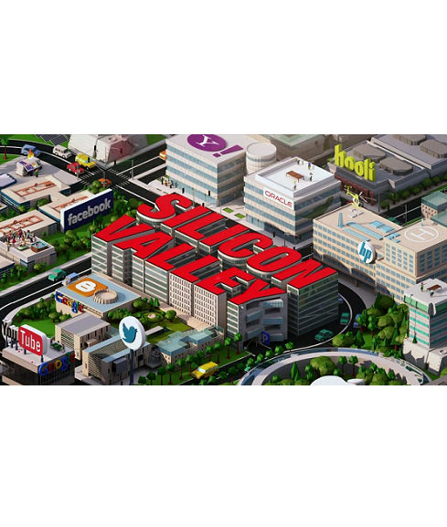
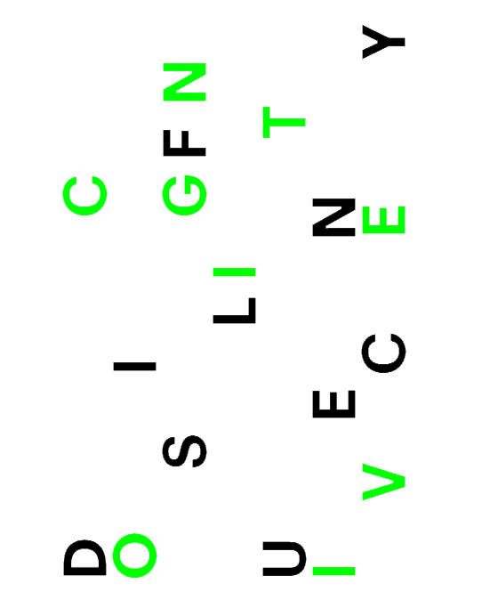
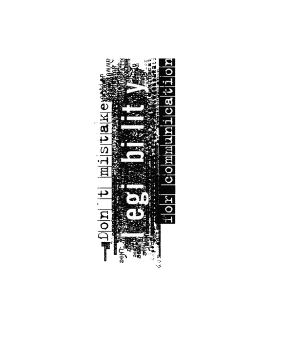
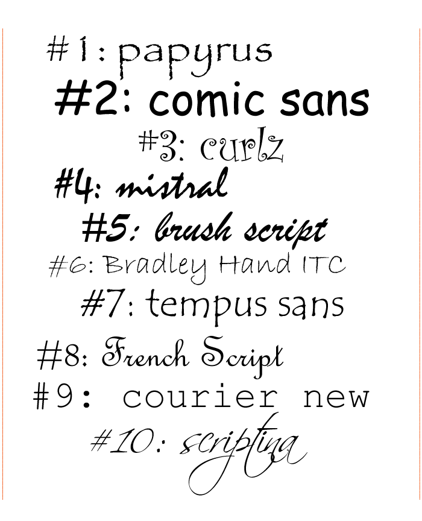
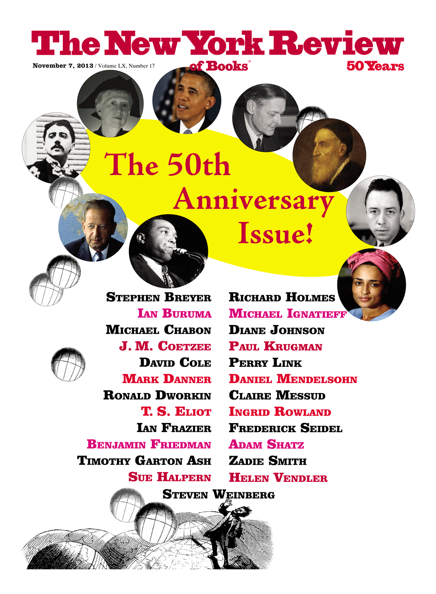
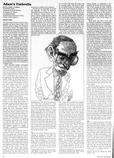
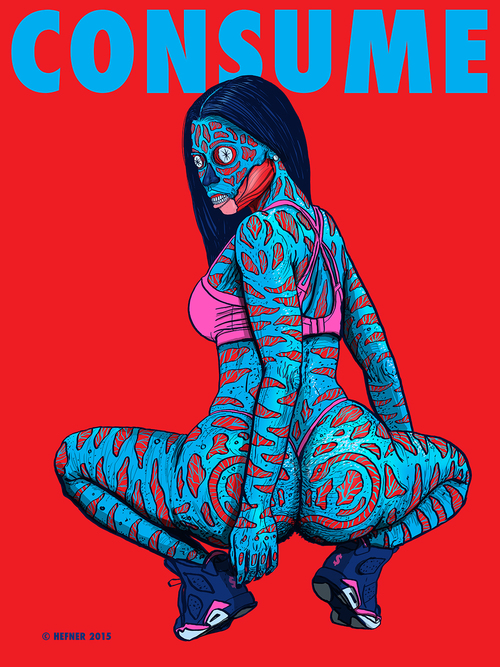
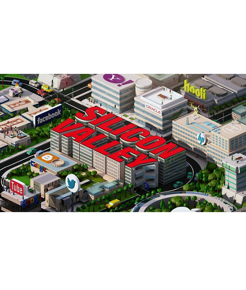